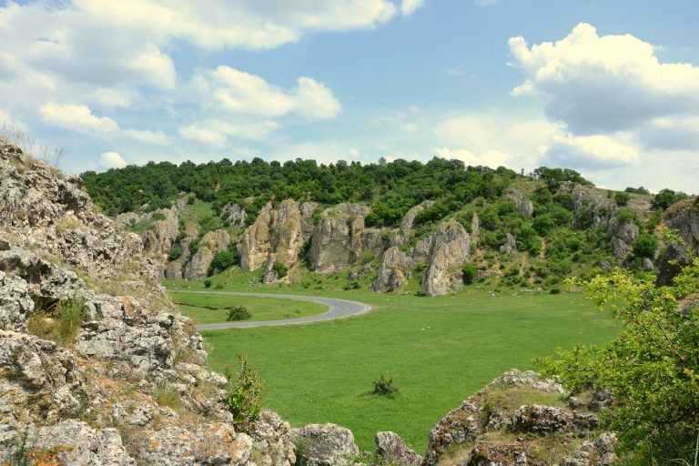

Constanta
- Cheile Dobrogei
- Cazinoul din Constanta
- Farul Genovez
- Acvariu Constanta
- Delfinariu DELFINARIUL se numara printre cele mai vizitate obiective turistice din Constanta atat in sezonul estival, cat si in extra sezon. Alaturi de Planetariu, Observatorul Astronomic si Microrezervatie, Delfinariul face parte din frumosul si interesantul Complex Muzeal de Stiinte ale Naturii Constanta, situat la intersectia bulevardului Mamaia cu strada Soveja.
- Muzeul de Istorie Naţională şi Arheologie
În zona nord-estică a județului poți descoperi Cheile Dobrogei, o zonă avifaunistică protejată de lege. Vegetația din zonă asigură hrană și condiții de cuibărit pentru păsări migratoare și pentru specii de păsări aflate pe lista celor protejate de lege. Printre aceste specii de păsări se numără pescărușul albastru, uliul cu picioare scurte sau gâsca cu piept roșu.
Cazinoul se află în centrul istoric al orașului, pe faleza din peninsulă, în vecinătatea bulevardului Regina Elisabeta. Este una dintre clădirile emblemă ale Constanței. În zona în care se ridică astăzi mai fusese, între 1880-1902, o construcție de lemn, o „cazină” cum se numea atunci – loc pentru spectacole de teatru, baluri, loc de recreare pentru turiști. Construcția unui edificiu cu funcții asemănătoare marilor cazinouri europene a început prin anul 1904. Inițial, planurile sunt întocmite de către arhitectul Petre Antonescu, care proiectează o clădire al cărei stil arhitectonic se inspira din tradițiile artei românești. După terminarea fundațiilor, însă, planurile sunt schimbate, Primăria încredințând modificarea lor unui arhitect de origine franceză[1] (sau elvețiană[2]), Daniel Renard, care renunță la specificul stilului românesc, în favoarea unui stil Art Nouveau[3] sub influența cosmopolită a cazinourilor epocii, în care motivul principal este un fel de demi-rozasă în formă de scoică. Construit din 1908, edificiul constănțean este terminat în 1910, când este și inaugurat (în 1912 se fac ultimele retușuri).

Nelipsit din pozele de vacanta ale turistilor si din vederile care amintesc de litoral, CAZINOUL din Constanta este fara discutie emblema orasului. O cladire impunatoare care emana inca aerul perioadei sale de glorie, Cazinoul "vegheaza" tarmul Marii Negre de peste 130 de ani.Incepturile Cazinoului se leaga de trecerea Dobrogei sub administratie romaneasca, fiind prima cladire ridicata la malul marii dupa incheierea dominatiei otomane. Mai precis, piatra de temelie a Cazinoului a fost pusa in anul 1880. La acea vreme asezamantul era amplasat langa Farul Genovez si era construit pe structura de lemn, iar la exterior era captusit cu scandura. In interior erau amenajate o sala de dans, doua sali de jocuri si doua sali de lectura, unde vizitatorii puteau citi presa locala, nationala si internationala.
Farul Genovez este un monument care poate trece foarte usor neobservat, insa frumusetea si importanta sa pentru istoria orasului Constanta sunt de necontestat. Farul Genovez este amplasat pe faleza orasului, intre Cazino si fostul Hotel Carol (astazi, Comandamentul Marinei).
Monumentul are o inaltime de 16 metri, forma octogonala si este construit din blocuri de piatra naturala, cioplite pe toate fetele si unite intre ele cu mortar facut din var si nisip de mare amestecat cu scoici. Farul se continua cu o cupola metalica cu opt geamuri din care era proiectata lumina. La randul sau, varful cupolei este decorat cu elemente care indica punctele cardinale. In interior se afla o scara in forma de spirala, cu 53 de trepte, care ne conduce catre cupola metalica. Forma octogonala este cea care ii ofera farului o nota de unicitate, facandu-l sa fie o constructie orginala.
.jpg)
Acvariu este amplasat pe malul marii, chiar in fata impunatorului Cazino constantean. Inaugurat cu mare fast pe data de 1 mai 1958, Acvariul din Constanta a fost pentru o lunga perioada de timp prima si singura institutie publica de acest gen din tara noastra. Cladirea care gazduieste acvariul a fost construita la inceputul secolului XX ca anexa a Cazinoului si a functionat ca restaurant pana la reamenajarea ei pentru destinatia actuala . Spatiul expozitional al Acvariului este destinat prezentarii expozitiei permanente de fauna si flora acvatica, dar si unor expozitii temporare cu diverse tematici legate de biologie, ecologie acvatica si pescuit marin.
Aici puteti gasi programul reprezentatiilor:
Delfinariul a fost inaugurat pe data de 1 iunie 1972, reprezentand la acea vreme primul muzeu de acest gen din Romania si din sud-estul Europei. In prezent, Delfinariul ramane singura locatie din tara noastra in care va puteti relaxa urmarind un spectacol extraordinar ai carui protagonisti sunt delfinii, leii de mare si pinguinii. Vedetele Delfinariului constantean sunt Peipei, Chen Cheng si Ni-Ni (un mascul si doua femele), trei delfini adusi in 2010 din China. Starurile cu inotatoare executa giumbuslucuri pline de farmec in fiecare zi dupa un program bine stabilit, smulgand zambete si aplauze frenetice din partea spectatorilor prezenti
Instituţia adăposteşte obiecte de origine greacă, romană, bizantină şi medievală (unelte şi arme din piatră, bronz şi fier), ceramică, elemente arhitectonice antice (coloane, capiteluri, frontoane, decoruri, etc.), sculpturi antice, vase din sticlă, statuete din bronz, bijuterii, numismatică (colecţia cuprinde monede din argint, bronz şi aur, unele dintre ele fiind unice), icoane, documente, hărţi, machete, fotografii, telegrame, reviste, obiecte ce au aparținut unor personalităţi ale începutului de secol XX, piese de mobilier şi alte obiecte cu o mare încărcătură istorică.